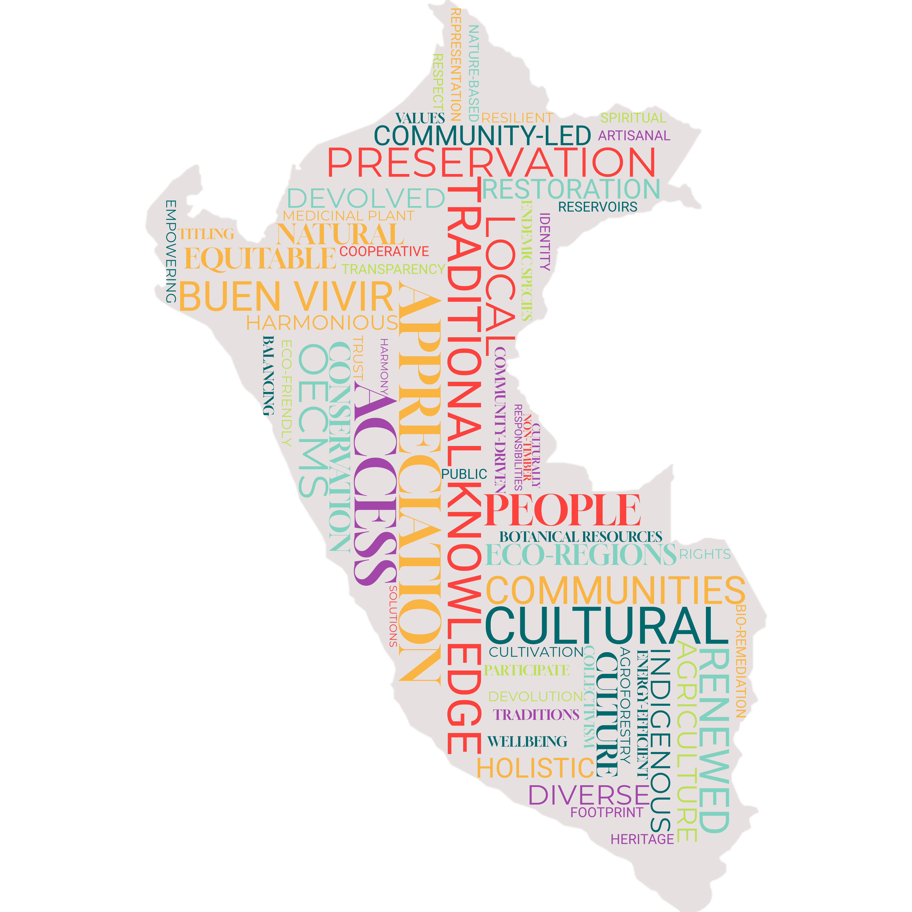

Nature as Culture
Peru’s landscape in 2060 embodies a commitment to sustainability, cultural preservation, and social equity achieved through community-driven approaches. The principles of ‘Buen Vivir’ guide both economic activities and environmental governance, ensuring that nature and communities thrive in harmony. The country’s diverse eco-regions and characteristic landscapes are not only preserved but celebrated as integral components of national identity.

Characteristics
 Climate Change: RCP 2.6
Climate Change: RCP 2.6
Population: 37.21 million
 Economic development: 812 billion USD
Economic development: 812 billion USD
Value perspective on nature: Mainly Relational
 Protected areas (proportion of Peru under protection): 30% by 2030
Protected areas (proportion of Peru under protection): 30% by 2030

Shifting in Values and Lifestyles
In response to the cultural homogenisation and disconnection from nature resulting from trends of neoliberal globalisation, the philosophy of Buen vivir gains mainstream appeal within Peruvian society(1–3). The central tenets of Buen vivir being a focus on wellbeing, sufficiency, collectivism and the harmonious relationship between people and nature (4). This prompts a revived societal recognition of the cultural and spiritual importance of Peru’s landscapes, driving broader economic and political change in the management of the environment and natural resources.
Following the desire of the population to dwell closer to nature the increase in the proportion of the population living in urban areas is relatively small increasing from 78% to 81.5% by 2060 ((5), according to SSP3), resulting in a greater area of lower density settlements. At the same time in line with the spirit of self-sufficiency, individuals make efforts to reduce their consumption and generally live more sustainable lifestyles.
Changing economic priorities
The current prevailing conception of economic development is redefined in accordance with the principles of Buen Vivir, resulting in a paradigm shift towards sustainable activities, particularly those incorporating traditional and indigenous knowledge, being prioritized over the maximisation of production. This results in GDP per capita, increasing to 812 billion USD by 2060 (converted to USD using purchasing power parity (PPP) in 2017), as projected under SSP3 (6).
In terms of agriculture, holistic agro-ecological techniques such as agroforestry become widespread and the cultivation of botanical and medicinal plants endemic to Peru is actively promoted, fostering both biodiversity and traditional knowledge preservation. This is achieved through actions such as the continued development of regional strategic, and action, plans on Biotrade, leading to the expansion of the national markets for these goods1. In addition, producer organizations play a key role in supporting local farmers and ensuring fair market access. As a result of these trends, there is a moderate expansion of the total area utilized for agriculture. Albeit with the intensity of agricultural activities remaining fairly low, reflecting a strong commitment to cultural values and ecological stewardship. Similarly, the sustainable artisanal fishing sector is promoted and safeguarded, supporting coastal communities.
Extractive activities such as mining activities, are allowed to continue, however they are now strictly regulated to minimize their ecological footprint. New concessions can be granted, but strict legal requirements keep the actual exploitation of these sites relatively low. Tourism shifts towards nature-based activities that connect visitors with Peruvian culture, such as farmer cooperative visits and traditional craft workshops. This not only supports local economies but reinforces the appreciation of landscapes and traditions. These changes in the economy result in a greater formalising of economic activities, with the subsequent tax revenues re-invested in improving local economies.
Indigenous Communities
Indigenous communities experience strengthened autonomy and cultural resurgence, guided by the principles of Buen Vivir. Traditional ecological knowledge is integrated into governance and economic activities, ensuring sustainable land use and biodiversity conservation. Land tenure security is reinforced through an increase in the granting of outstanding applications for Indigenous land titles until 2060. These titled area are designated as Other effective area-based conservation measures (OECMs) with management responsibility devolved to communities. Community-led water management systems, inspired by ancestral techniques, enhance resilience to climate change (7).
Governance, Planning and Resource Management
In the political sphere, the governance of land and natural resources is strengthened through greater devolution of responsibilities to departmental authorities. In addition, there is greater citizen participation in decision-making using multi-stakeholder forums at the national and regional scales, building upon existing successes2, as well as incorporating digital innovations (CivicTech)3. These processes lead to increased transparency of environmental regulations promoting accountability and public trust in the state. The overarching orientation of landscape management is to prioritize equitable access to, and use of, land to ensure the material needs of the population are met whilst minimising environmental degradation. This is achieved through effective implementation of the ecological and economic zoning plans as well as the strict control of environmental pollution. The 2023 modification to the Forest and Wildlife law4 is repealed and responsibility for forest zoning is returned to MINAM. The design of policies is supported by an expanded environmental research agenda that seeks to integrate traditional ecological knowledge to foster holistic solutions for sustainability (8).
Rural, and particularly indigenous communities, benefit from secure land tenure through formal titling, empowering them to actively participate in sustainable land management practices (9). Whereas urban areas are better planned to integrate green spaces and energy-efficient technologies. The steady implementation of infrastructure projects across the country, particularly communications infrastructure, has significantly reduced socio-economic inequality improving access to education, healthcare, and other basic services (10). The transport network specifically is developed to help supporting nature-based tourism without disturbing the integrity of the landscape.
The management of water resources sees remarkable improvements through devolved community-led systems utilising ancient water technologies (11,12). Semi-natural reservoirs and channels are revitalized, securing water availability and bio-remediation methods lead to improved water quality across urban and rural areas.
Ecological Restoration and Protection
Peru achieves its obligations with regard to the KM-GBF target5 to expand the coverage of protected areas and Other Effective area-based Conservation Measures (OECMs)6 to 30% of the countries territory by 2030. New OECMs are selected to specifically preserve landscapes characteristic of Peru, with a focus on balancing the representation of diverse eco-regions and sites of cultural heritage. To foster local stewardship, these OECMs are often designated on Indigenous community lands, where management is devolved to communities7.
6 https://iucn.org/news/202409/oecms-collaborative-agenda-2025-2030-towards-achieving-target-3-global-biodiversity
7 https://es.wikipedia.org/wiki/Categor%C3%ADas_de_%C3%A1reas_protegidas_de_la_UICN
Within national protected areas , management focuses on reversing biodiversity loss, especially the protection of culturally significant species, as well as the mitigation of human and wildlife conflict. In tandem with the establishment of new conservation areas, large-scale environmental restoration projects have successfully revived degraded lands, enabling traditional practices such as the harvesting of non-timber forest products to flourish once again.